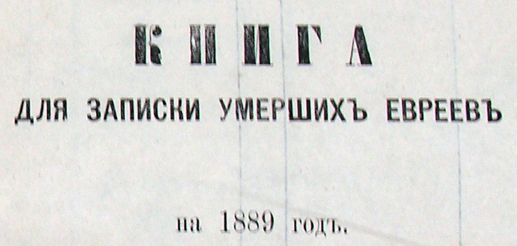

|
· Introduction · Record Format · Acknowledgements · Search the Database |
This database contains information extracted from the 701 death records in the 1889 Jewish deaths register of the city of Minsk.
The original record book of the 1889 Minsk Death Records was found in a used book store in Minsk, Belarus. The book was purchased by the JewishGen Belarus SIG's founder and former coordinator, David Fox. He digitally photographed each page of the book and sent the images to Vitaly Charny, a SIG volunteer, who translated the Cyrillic portion of the record.
The Czarist Jewish death registers (as well as the birth, marriage, and divorce registers) were created by the official government rabbis ("crown rabbis") in two copies. One copy was provided to the government, and the other was maintained by the Jewish community.
It was rumored that this 1889 death register was found in the attic of a building under renovation. As with all Czarist-era Jewish metrical books, data was recorded in both the Russian language (using the Cyrillic alphabet) and in Hebrew (in the Hebrew alphabet). The images that are linked to this file clearly show that the data was kept in both languages. The Hebrew part of the records were not translated for this database. It should be pointed out the given names on the Hebrew side may be different than the name recorded on the Russian side.

The Czarist Jewish death records typically contain the following information:
The column headings in the original czarist death registers (pictured above) are, from left-to-right:
By clicking on the name of the person who died, you will be able to view the image of the original death record in the record book.
Thanks to Adar Belinkoff, Warren Blatt and Michael Tobias for formatting and creating the programming that allows users to link to the actual image of the record.
This database is searchable via the JewishGen Belarus Database.
{kind=link}